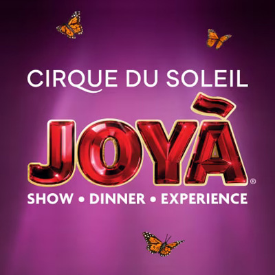

본문콘텐츠영역
ABOUT US
From the streets of small town Quebec to the world stage,discover how a team of street performers became an international phenomenon.
-
History
At the dawn of the 1980‘s, a troupe of performers founded by Gilles Ste-Croix took their talent to the streets of Baie-Saint-Paul, a charming village on the shores of the St. Laurent River near Quebec City. Known to the public as Les Échassiers de Baie-Saint-Paul (The Stiltwalkers of Baie-Saint-Paul), this group would form the core of what would grow into Cirque du Soleil.
This crew had an eclectic show, highlighting jugglers, dancers, fire breathers, and musicians who pleased local fans with their act. Little did these early fans and performers know that these embryonic beginnings would lead to something magical, exciting, and revolutionary on a global scale.
-
Performers and Artists
The core of Cirque du Soleil‘s creative energy is made up of our performers. Athletes, acrobats, and artists are nurtured and allowed to flourish creatively while working as part of our creative team. These people are driven by a passion to continually surpass themselves in a pursuit to create exciting new art. Each artist is an integral part of the originality of Cirque du Soleil, and everyone‘s contribution is essential to the success of the cast.
1,300 artists hailing from 55 different countries form the current Cirque du Soleil team. Each individual show features anywhere from 50 to 100 artists.
35% of our cast come from sports disciplines such as rhythmic and acrobatic gymnastics, as well as trampoline, tumbling, diving, synchronize swimming and urban acrobatic disciplines. 34% come from circus arts disciplines, while 31% come from various artistic backgrounds such as dance, music, physical theatre and street arts. Our multifaceted team allows us to offer a unique artistic environment, where ideas and dreams grow into something audiences around the world will remember for a lifetime.
SHOW
Find a complete list of our current and past shows here,and discover the spectacles that will live on forever in the minds of those who experienced them!
-
- Alegría
- A Classic Reimagined In A New Light
-
- BAZZAR
- The eclectic lab of infinite creativity
-
- CRYSTAL
- A breakthrough ice experience
-
- ECHO
- A spectacular performance
-
- Corteo
- Join the Cirque du Soleil Corteo parade
-
- Drawn to Life
- Set your imagination in motion
-

- JOYÀ
- Joy, courage and friendship conquer all
-
- KÀ
- An epic adventure of love and conflict
TRAILER
At Cirque du Soleil, we offer an escape from everyday life through the delight and whimsy of our shows. Let us welcome you into our world where awe-inspiring show footage and fan favorite videos will transport you.GALLERY
Here‘s the easiest way to stay in-the-knowon the latest news and stories from Cirque du Soleil.